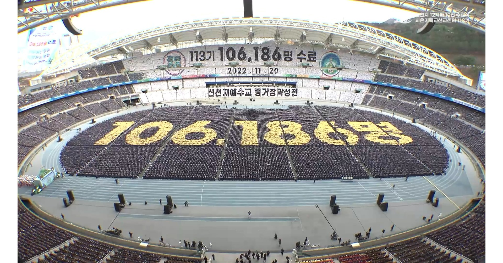
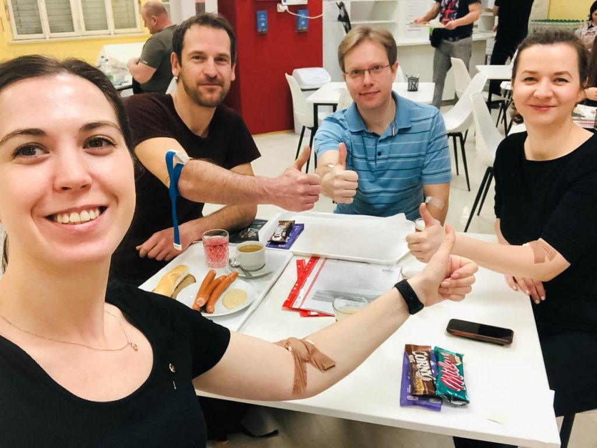

Krásná Shincheonji, která zachovává novou smlouvu a šíří lásku k pravdě
Shincheonji ovládá Zjevení a je tvořena těmi, kdo se zrodili z Božího semene, byli sklizeni, označeni pečetí a vytvořeni do dvanácti kmenů, jak je známo.
"Potom jsem uviděl nové nebe a novou zemi, protože první nebe a první země pominuly."
Zjevení 21 : 1Název a podstata církve

Celý název církve zní „Shincheonji, církev Ježíšova, svatyně stánku svědectví“. Jméno Shincheonji pochází z čínštiny a znamená Nové nebe nová země.
Založení Shincheonji, její struktura a organizace jsou čistě na základě Bible. Shincheonji navěky zachovává novou smlouvu, což je vůle Boha a Ježíše.
Na základě vůle Ježíše se Shincheonji zavazuje stát se vtělesněním lásky, která přichází jako světlo, déšť a vzduch.
Mou upřímnou nadějí je, aby s vámi se všemi byla vždy bezpodmínečná láska Boží a Kristova.
— Předseda Man Hee Lee
Misijní centrum Sión
V Křesťanském misijním centru Sión je vyučováno o fyzickém naplnění knihy Zjevení, které se týká dnešního času. Kurz je rozdělen do čtyř částí:
- Základy víry: Seznámení se základy víry.
- Tajemství království nebeského: Význam podobenství.
- Celá Bible: Od Genesis až po Zjevení.
- Zjevení: Proroctví a naplnění.
absolventů za jediný rok
včetně stovek pastorů z celého světa, kteří s námi uzavřeli MOU o spolupráci.
Život víry v praxi

Dobrovolnictví
Bible považuje lásku za to nejcennější. Pořádáme návštěvy domovů seniorů, doučování studentů nebo pravidelné darování krve (LIFE ON).

Kultura
Pořádáme vánoční události, sportovní turnaje a divadelní představení, která přibližují radost z víry.
Ozvěte se nám
"Poznejte tajemství Bible nevídaným způsobem."